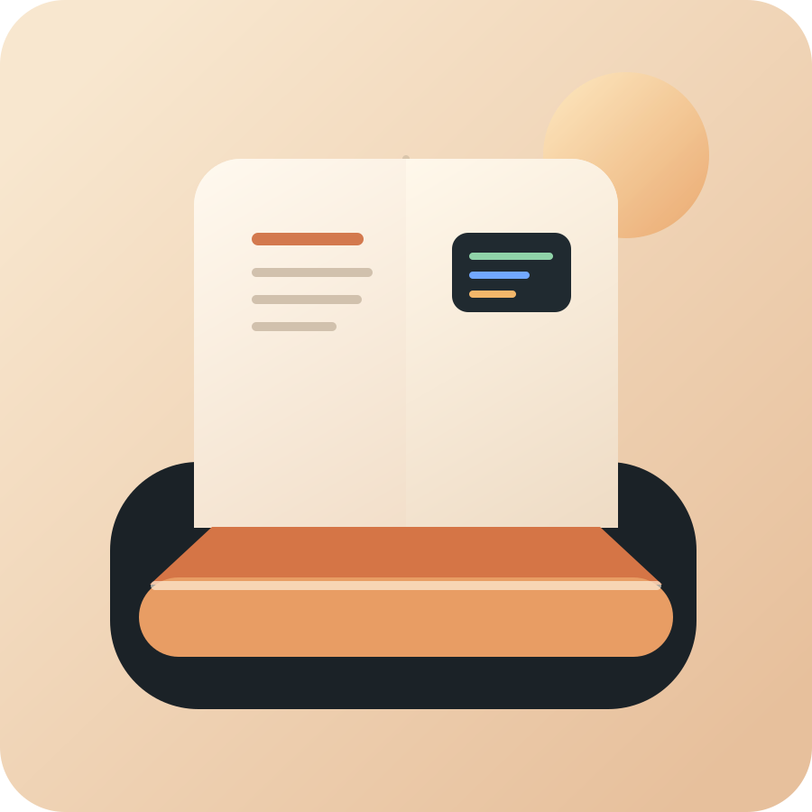

Interactive Edition
WSL2 是許多人第一次真正把 Linux 用起來的地方。
這本電子書以原始教學稿為核心，重新整理成多頁式閱讀體驗。你可以像翻書一樣往前讀，也可以直接用左側目錄搜尋某一章。內容聚焦在實際上手，而不是只講概念。

多頁式閱讀
每章都是獨立頁面，能直接分享、列印與跳讀。
實作導向
每個階段都安排可直接照做的指令與小任務。
像書一樣翻頁
版面以單頁紙張與前後頁導覽設計，讀感更接近電子書。
這本書適合誰
- 剛開始學程式的人
- 在 Windows 上做開發、想接觸 Linux 的人
- 準備使用 Git、Python、Shell 或 AI 工具鏈的人
你會學到什麼
- WSL2 安裝與初始設定
- Linux 基本指令與套件管理
- 實作工作區、Git、Python 與 Bash 練習
- VS Code 工作流與常見錯誤排查